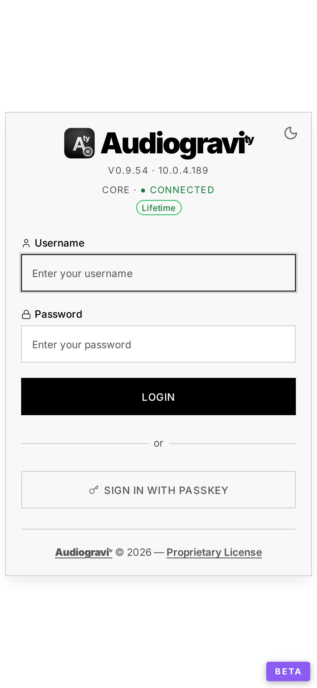
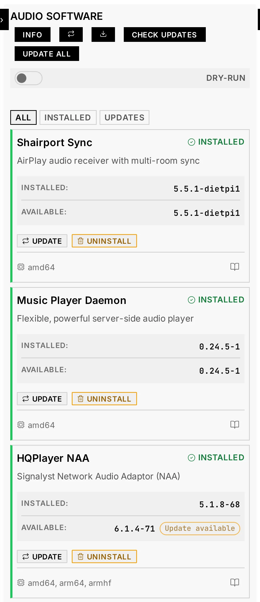
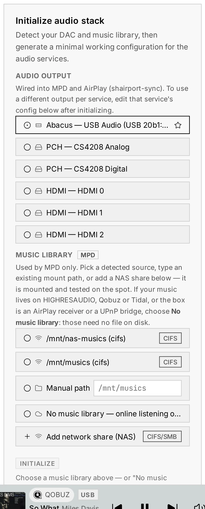
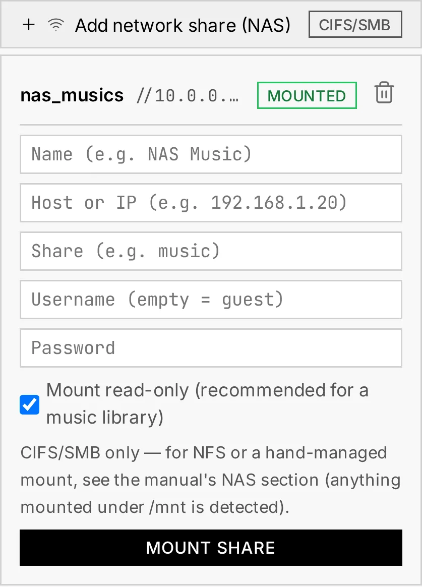
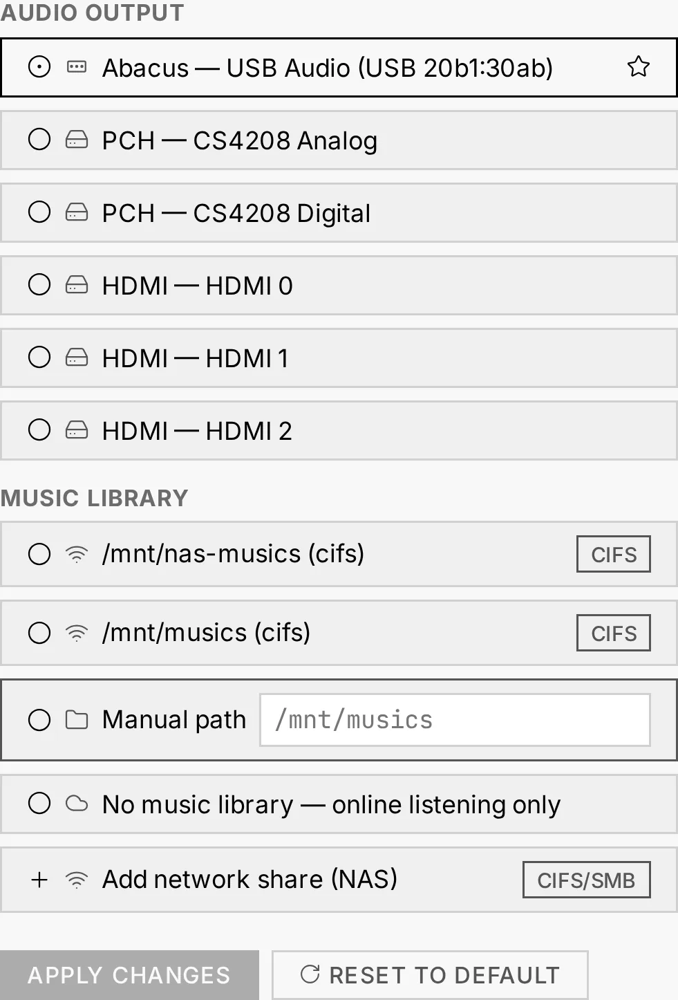

3. First run — guided audio setup
The first time you open Audiogravity, a few guided steps take you from a bare box to music playing — without touching a config file.
1. Your trial activates automatically
A 30-day trial — full access to every Pro feature — is activated on first run. No action required, no card. When it ends you can keep using the free Starter features or buy a lifetime licence (see 7. Administration → Licence).
2. Sign in — and secure your account
Audiogravity ships with one administrator account: username admin,
password admin123. Sign in with it, then change the password right away
(Admin tab → your user card) — the default is public knowledge.
After your first password login, Audiogravity offers to register a
passkey on the device — Face ID, Touch ID, a fingerprint or a hardware key.
Accept, and every later login becomes a tap: the login screen recognises the device
and asks for the passkey directly, with Use password instead as the fallback.
(Passkeys require Audiogravity to be reachable over a real HTTPS
domain — see the --public-url flag in 2. Installation.)
More accounts — family members, a read-only guest — can be added later from the Admin tab (see 7. Administration).

3. Install the audio engines
MPD is already there. The installer brings it, because Audiogravity plays everything through it: your local library, the queue, internet radio, and Qobuz, Tidal and HIGHRESAUDIO alike. Its card in Audio Software offers no UNINSTALL button for that reason — a box without MPD has an interface and no sound. If you use the box only as a Roon endpoint or an HQPlayer NAA, stop its service from the Services tab and turn its ENABLED badge off there: a stopped daemon costs nothing, and that badge is what keeps it stopped after a reboot.
Note. Installing or updating Audiogravity starts MPD and sets it to start with the box — installing the software means guaranteeing what it plays through. An update therefore undoes both switches above; set them again if that is not what you want.
The other engines are yours to choose, from the Audio Software tab (see 7. Administration → Audio Software): each has a card with an INSTALL button.
- Shairport Sync — to receive AirPlay.
- UPnP Bridge (upmpdcli) — to expose the box as a UPnP renderer other apps can cast to. It drives MPD, so it needs the player that is already there.
- Roon Bridge / Roon Server / HQPlayer NAA — only if you use Roon or HQPlayer.
Install what you need now — you can always come back for the rest later.

4. Configure the audio stack (guided)
On a new box, the Config tab shows an Initialize audio stack panel (administrators only). It:
- Auto-detects your DAC and your music library.
- Generates a minimal, bit-perfect configuration for the three audio services — MPD (local library), AirPlay (shairport-sync) and UPnP (upmpdcli) — all wired to the output you choose.
- Asks for your admin password before applying.
Once at least one service is set up, the panel disappears and each MPD / AirPlay / UPnP tile shows a CONFIGURED badge.

Why "bit-perfect"? The generated configs send audio to your DAC untouched — no resampling, no volume math in the digital domain — so what your DAC receives is exactly what the file contains.
Raspberry Pi with a HAT DAC? A board stacked on the GPIO header is not detected until Linux is told it exists, so it will be missing from this panel. Declare it once at the OS level — see 9. Troubleshooting → My DAC is not in the output list — then come back here.
The DAC stays put
When you configure a USB DAC, Audiogravity pins its sound-card index at the OS level. Linux then always gives that DAC the same number, even after a reboot or a USB re-plug — so the output your services target never drifts and nothing needs re-checking at startup.
Per-service outputs
Each service can target its own output. For example: MPD on your USB hi-res DAC, AirPlay on the optical out. Change any service's output later from the Guided editor (see below) in a couple of clicks.
No music of your own? Say so
A box with no local music is an ordinary box: HIGHRESAUDIO, Qobuz and Tidal need no file on disk, and neither does an AirPlay receiver or a UPnP bridge. The picker offers No music library — online listening only as a choice in its own right. It is not an empty field — it is an answer, and the box records it as one: MPD is configured without a music folder rather than with a blank one, and everything else works normally.
The choice is reversible in both directions. A box that started with no library can be pointed at one later from the Guided editor, and one that has a library can be released from it — with a confirmation first, since that takes something away.
A path you do give is checked before anything on the box is touched: it must be absolute, exist, be a directory, and be readable by the account MPD runs as — a folder you can read is not necessarily one MPD can, and that difference is invisible once MPD is running. If a check fails you are told which one, and nothing has been changed.
Music on a NAS? Add the share from the picker
The Music library picker lists what the box can already see: USB drives (ext4 / exFAT) and existing mounts. For a NAS share (CIFS/SMB — what Synology, QNAP and every mainstream NAS speak), use Add network share (NAS) at the bottom of the picker: give it a name, the NAS host, the share name and — unless it's a guest share — its username and password. Audiogravity mounts and tests the share on the spot: on success it appears in the list, pre-selected; on failure you get the actual mount error (wrong password, unreachable host) and nothing is left behind.
Under the hood this creates a systemd mount-on-access unit — robust to a NAS that is off at boot — with the credentials in a root-only file, mounted read-only by default.
Adding a share mounts and selects it, but does not yet make it MPD's library on its own — that's the same two-step rule as any source: pick it in the picker, then confirm — click INITIALIZE (in the panel) or Apply (in the Guided editor) to actually point MPD at it. That confirm step also starts a library scan so the new music is indexed and shows up in the Library view (a large NAS keeps indexing in the background — give it a moment). To remove a share, reopen the panel: each one it created is listed with its state (mounted / on-demand) and a trash button — removing one it isn't currently using takes effect immediately; if the share is MPD's active library, it warns you first.

Prefer the terminal, or need NFS? Any share you mount yourself at the OS level (fstab or systemd units, CIFS or NFS) under
/mntis detected exactly the same way — see 9. Troubleshooting → Manual NAS mount for the recipe. NFS is terminal-only by design: mounting it from the UI would require RPC daemons on the box, which Audiogravity refuses on an audio appliance.
5. Change output or library later (Guided mode)
For MPD, AirPlay and UPnP, the Config editor opens in a Guided view where you change the audio output or music library in a couple of clicks. Only the setting you touch is rewritten — the rest of your config is preserved. A Reset to default action regenerates a clean minimal config (admin password required; your current file is backed up first).

6. Find your way around
The tab bar (across the top, or a sidebar in the vertical layout) is the app's map:
- Profiles · Services · Audio Software · Systemd · Performance · Config · System — running the box: audio scenarios, service control, engine installs, OS tuning, config files and monitoring (all covered in 7. Administration).
- Pipeline — the live signal-path view (Pro; see 6. Outputs & engines).
- Library (Pro) — browse, search, queue, sources and outputs: where you play music.
- Admin — users and access, announcements, updates and the licence.
- Manual — this manual, readable inside the app.
On a Starter licence the Pro tabs carry a small lock — tapping one opens the licence panel. Config is not one of them: editing a service's configuration file and the guided setup are available on every edition — configuring the machine is part of owning it. The sticky Now Playing bar sits above the footer whatever the tab, and the gear in the top bar opens Settings.
7. Trust the box's certificate (once per device)
If you chose HTTPS at install, the box created its own certificate authority and signed the interface's certificate with it. Your browser does not know that authority, so the first visit shows a security warning.
On an iPhone or iPad, there is no way round it. Safari offers no way past that warning, so the address does not open at all until the authority below is installed. Nothing is broken — it is simply how Safari treats an authority it does not know.
On Android and on a computer, accepting the warning is enough to look around. It is not enough to install Audiogravity as an app: a phone only grants a site an app icon, an offline start and notifications once it trusts the certificate. So the step below is required on an iPhone and worth doing everywhere else. That is one operation per device, and it holds for years — the authority is created once and never replaced, even when the interface's own certificate is renewed or the box changes address.
-
On the device, open
http://<box-address>:8081/ca.crt— the installer prints this exact address at the end.Note the
http://. The certificate is deliberately handed out unencrypted, on a port that serves this one file and nothing else. Overhttps://it could not be fetched at all: doing so would mean trusting the very certificate you are coming to collect, and Safari on iOS refuses outright. A certificate authority is public by design — it is the thing you are meant to distribute — and it carries no key. -
Then, depending on the device:
| Device | What to do |
|---|---|
| iPhone / iPad | Open the address in Safari and allow the download. Then Settings → Profile Downloaded → Install. That installs it — and installing is not trusting: go to Settings → General → About → Certificate Trust Settings and switch Audiogravity Local CA on (the entry carries the box's address after that name). That last switch is the step that counts; without it nothing changes. (Verified end to end on iOS: afterwards the interface opens with no warning and installs as an app.) |
| Android | The goal is to install the file as a trusted certificate authority from the system settings — that is the only place Android allows it. Look under Security for Encryption & credentials, then Install a certificate (or Install from storage) → CA certificate, and pick the file you downloaded. We give no exact path on purpose: it differs between Android versions and between manufacturers, so a fixed one would be wrong for most phones. Two things stop people: the phone must have a screen lock (PIN, pattern or password), or Android refuses to store an authority at all — set one first; and since Android 11 only the Settings app may start the install, so tapping the downloaded file in Chrome does nothing. Android then warns that a third party could inspect your traffic — here that third party is your own box. ⚠️ Unlike iOS, this has not been verified on an Android device: the certificate should be trusted for browsing, but we have not confirmed that Audiogravity then installs as an app. |
| macOS | Open the file in Keychain Access, then set it to Always Trust. |
| Windows | Install it into Trusted Root Certification Authorities. |
Why not simply a real certificate? Because a public authority will not certify a private address like
192.168.1.30. If you would rather have a certificate every device trusts with no manual step — and you also want passkeys and push notifications, which a self-signed setup can never provide — give the box a domain name and a real certificate: see 2. Installation → Getting HTTPS.
8. Install it as an app (recommended on phones)
Audiogravity is an installable web app (PWA): added to your home screen it opens fullscreen, in its own window, with the app icon. On a self-signed setup, do step 7 first — an untrusted certificate is what stops the app from installing.
- Android — open the site in Chrome and accept the Install app prompt (or browser menu → Add to Home screen). The installed app also honours the Portrait Lock at the OS level. (On a self-signed setup this is the part we could not verify on an Android device — see the warning in step 7. With a real certificate and a domain name, it is not in question.)
- iPhone / iPad — in Safari, tap Share → Add to Home Screen. On iOS this is also required for push notifications: Safari tabs can't receive them, the installed app can (see 7. Administration → Push notifications).
- Desktop — Chrome and Edge offer an install icon in the address bar; handy for a dedicated always-open controller window.
Next
Your box now plays. Head to 4. Listening to start playing music, or 5. Library & streaming to connect Qobuz, Tidal, HIGHRESAUDIO and internet radio.